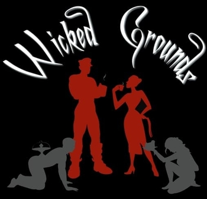
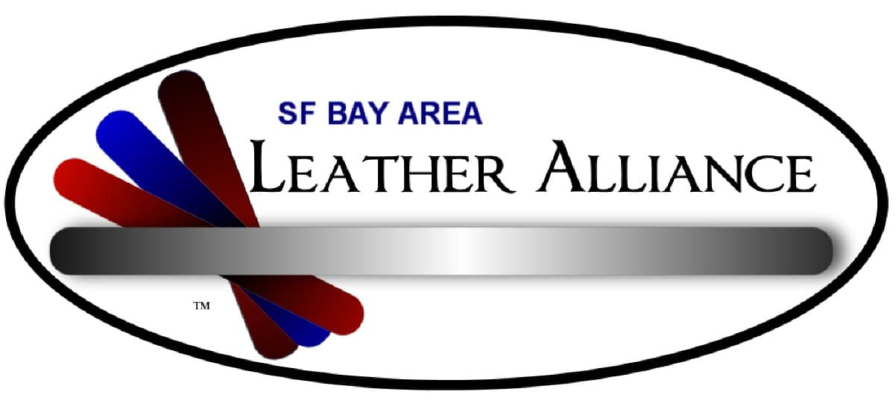

|
Folsom Street Events is a nonprofit organization serving the adult San Francisco alternative communities. Through the production of street fair such as the World Renowned Folsom Street Fair, Folsom Street Events promotes diversity within the leather/alternative lifestyle, highlighting entertainment, service and vendors. |
 |
SF Girl's of Leather is a group of self-identified Leathergirls. Membership is not limited by race, creed, orientation or gender; however, an identification of Leathergirl is essential. A girl-heart is an individual self-identity. San Francisco girls of Leather is a unique and powerful group of individuals — our solidarity and commonality is found in our understanding that the definition of Leathergirl involves who you are and not just how you play. |
 |
The National Coalition for Sexual Freedom (NCSF) was formed in 1997 by a small group led by Susan Wright under the auspices of the New York SM Activists. The goal was to fight for sexual freedom and privacy rights for all adults who engage in safe, sane and consensual behavior. |
 |
Peter Acworth's Kink.com, is a large local commercial producer of alternative sexuality websites. |
 |
The Society of Janus is a nonprofit, volunteer run, San Francisco-based education & support organization devoted to the art of safe, consensual, and non-exploitative power exchange. |
 |
The 15 Association is the oldest continuous gay male S/M fraternity in the Western United States. They are active in charitable fundraising and educational events geared towards safe S/M play for the gay men’s community |
 |
An educational group for women who have a positive personal interest in BDSM between women. The Exiles provide events where women with all levels of experience have a safe place to meet, explore and share information about safety, play techniques and resources, and connect with the leather community locally and nationally. |
 |
Mister S and Madame S are two of the most well known providers of leather gear and clothing, toys and other BDSM equipment in the San Francisco Area. They have a selection that simply can't be beat and knowledgeable staff to help you find whatever you're looking for. |
|  |
Wicked Grounds is San Francisco’s First and Only Kink Café and Boutique 289 8th Street |
 |
Bondage-A-Go-GoBondage A Go Go is a fetish themed dance party that has been held in the City since 1993 - making it the longest running weekly dance event in San Francisco. Though not for everyone, this influential event is a dark slice of heaven for artists, musicians, fetishists, burners and open minded nightclub goers of all types. All are welcome with the understanding that having an open mind and positive attitude goes a long way here. |
| Leather Etc. contains some of the best fetish bargains in town. The front of the store contains mostly vanilla leather jackets, but the back half of the store is all fetish. While the "buzz to enter" front gated door may be a little intimidating, the atmosphere inside is very comfortable and clean with an extremely friendly (but not too friendly) staff. | |
 |
Erobay is the Bay Area's most complete BDSM calendar of Events. It is maintained by volunteers from the many groups which throw events as well as individuals and contains information on Munches, Classes, Parties, Discussion Groups, Social Events, etc. |
 |
Edukink EduKink provides BDSM / leather/ fetish / kinky, sexuality and relationship classes, parties, munches, and special events. |
|  | The San Francisco Bay Area Leather Alliance is committed to creating a welcome and supportive environment for members of the SF Bay Area leather, fetish, kink and motorcycling communities. |
 |
The Crucible is Washington DC's only private Alternate Lifestyles Nightclub and for-profit Pansexual play space, and a preferred meeting place of The Black Rose organization. |
 |
Tokyo Kink Society - TKS is one of Asia's largest BDSM and fetish organizations (mainly events focused on BDSM (TKS Underground) and Fetish (Japan Fetish Ball), as well as lounges and munches. |
 |
Hardcore Heaven is a private BDSM & Fetish play party based in Sydney, Australia. |
 |
The Sanctuary for Lifestyle Arts in Dallas, Texas is 7500 square feet of playspace, and one of the largest facilities in the country. The owners recognized there was a need for a place for the local community to gather for socializing, and have been continually developing since 2000. |
 |
The BDSM Events Page |